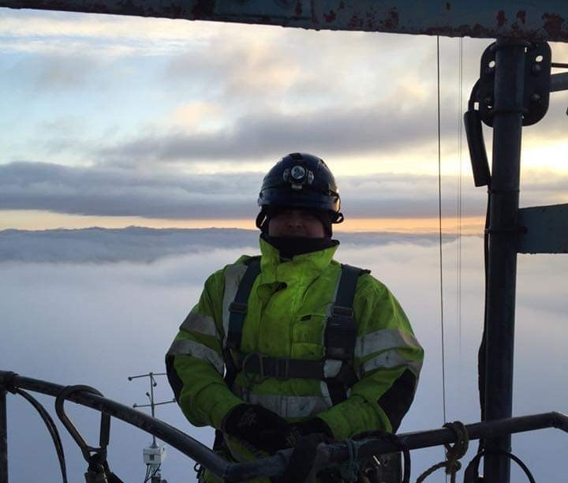

قائد الممارسة · شراكة حصرية
بقيادة شخص عمل على الأبراج بنفسه.
أمضى لي ستيفنسون أكثر من عقدين في خطوط النقل الهوائية، من العمل بالأدوات إلى قاعات الإدارة. تعلّم المهنة فوق الأبراج في المملكة المتحدة، ينصب الهياكل الفولاذية ويمد الموصلات في كل طقس يمكن أن تلقيه عليه المهنة، ثم مضى ليقود الأطقم ويقدم المشورة في مشاريع قائمة عبر جميع أنظمة الجهد العالي الرئيسية، من 132 إلى 500 كيلوفولت.
وهو المؤسس والمدير الإداري والمستشار التقني لشركة Innovecta Ltd، الاستشارية البريطانية المتخصصة في خطوط النقل الهوائية والتي يمتد عملها عبر المملكة المتحدة وإيرلندا وأوروبا والشرق الأوسط وآسيا الوسطى. ومن خلال Innovecta يدعم شركات المرافق والمطورين ومقاولي EPC بمراجعات قابلية التنفيذ، ودعم التنفيذ، وتقييم المقاولين، والتحقيق في الحوادث، والتدريب. وتضم مكتبته الفنية في Innovecta أكثر من 455 وثيقة ميدانية مجرّبة في خطوط النقل الهوائية: أدلة عمل، وتقييمات مخاطر، وبيانات أساليب، وموجزات يومية، ووحدات تدريبية، مكتوبة من الخبرة لا من النظرية.
يعرف لي هذه السوق معرفة مباشرة. فدعمه الأخير للتنفيذ وتدريبه للمقاولين شمل مشاريع كبرى لنقل الجهد العالي داخل المملكة، حيث سار على المسارات، وراجع الأساليب، ودرّب الأطقم التي تبنيها.
يعمل لي مع أسينديرا بموجب شراكة حصرية. في المملكة، لا يعمل إلا مع عملائنا، في مهماتنا، ويقودها شخصياً. وحين يخبرك كيف ستتصرف الأطقم فوق برج، فلأنه كان هو نفسه في تلك الأطقم.
مشورة من شخص أدى العمل بنفسه، على المرتفعات، على أرض الواقع.